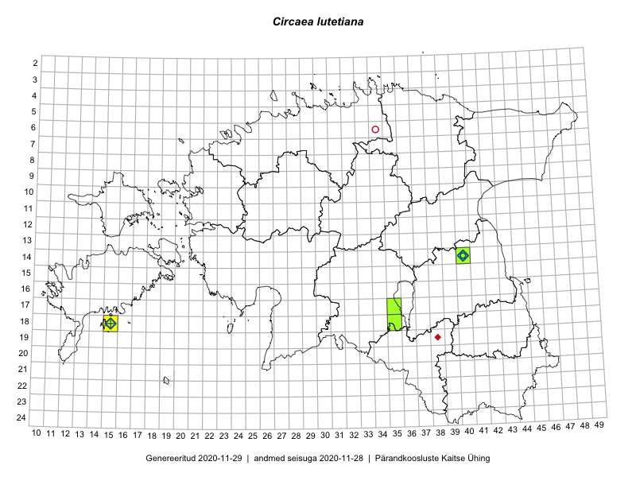

Circaea lutetiana
Uuendatud: 2016-12-02
Kaardile koondatud taksonid: Circaea lutetiana L.

Kaart põhineb 5 kirjel, neist vaatlusi 3 ja eksemplare 2. Taksonit on leitud 3 ruudust.
Viited andmebaasikirjetele